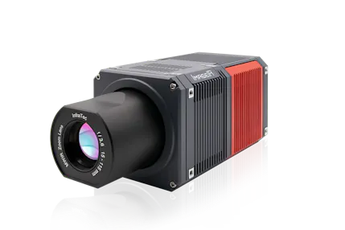
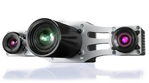

second page " about project"
about my project !
anti-collision & obstacle detection system is system that protects human lives
and avoids any accidents to ensure human's life safety , it can be applied on :



methods & materials:
- sensor fusion
- perspective mapping
- computer vision (yolo world)
- ai voting system & decision making
integration
radar& cameras work together detecting objects ( sending and receiving signals).
data integrates in an agx xiavier unit to idenetify and classify object .
warnings are send to the driver & train station unit
if there's any danger ai gives the order to stop